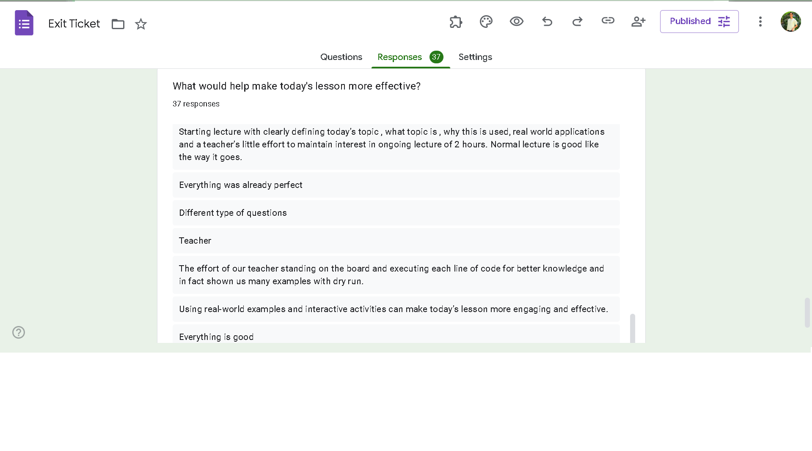
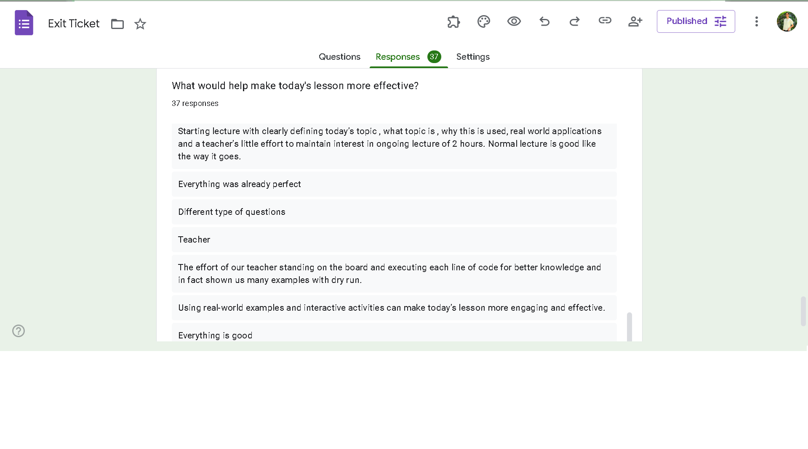

📝 Student Quiz
Click below to take the quiz:
📊 Exit Ticket Summary
Insights from student exit ticket responses:
 

🎙️ Lesson Podcast
Listen to the lesson podcast below:
📚 Literature Mapping Summary
Literature Mapping via ResearchRabbit:
I have used ResearchRabbit,a and I worked on the subject of “AI- and ML-based Smart Waste Management” by producing two visual literature graphs(Shown in this file). Starting from Gupta (2019) as my starting paper, where AI-based waste solutions for cities are discussed, I was taken on a research path by ResearchRabbit revealing to me an elaborate network of co-referred works that constitute highly relevant articles such as Vicentini (2009) and Arebey (2011), wherein optimization and sensor technologies in managing waste are deliberated upon. The tool enabled me to easily find papers that extended or were based on my seed paper, and the process of discovery was intuitive and fun.

✍️ Reflective Note
“AI has transformed my way of teaching by [Your 100-word reflection]. It made my content creation faster, my quizzes more interactive, and helped me explore new forms of student engagement.”
🌟 Bonus – AI Chatbot
Try chatting with the AI assistant below: